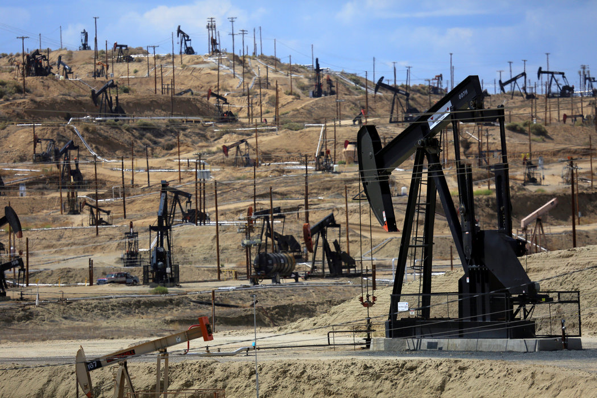

What is an Oil Field?Oil fields are regions of land or water where an abundance of petroleum extracting wells are established to extract the natural gases beneath its surface. With more cost-effective drilling technology, more than 65,000 oil fields of all different sizes have been established and approximately 1.3 million gallons of petroleum is being spilled annually. These oil fields and their spills impact the environment, humans, and climate change. Image Credits |
 |
Click the button to learn something new about oil fields and their impacts.
Your fact will appear here.